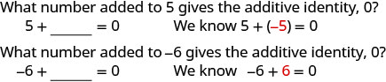
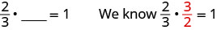
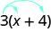
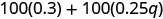
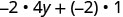
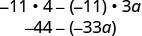

ક્રમવિનિમય અને જૂથબંધીના ગુણધર્મો વાપરો
ક્રમવિનિમયનો ગુણધર્મ
- સરવાળા અને ગુણાકારમાં લાગુ પડે છે ક્રમવિનિમયનો ગુણધર્મ.
- બાદબાકી અને ભાગાકારમાં લાગુ પડતો નથી ક્રમવિનિમયનો ગુણધર્મ.
ઉમેરો . સરવાળો કરો. |
|
|
ઉમેરો . સરવાળો કરો. |
|
ગુણાકાર કરો. ગુણાકાર કરો. |
|
|
ગુણાકાર કરો. . ગુણાકાર કરો. |
|
જૂથબંધીનો ગુણધર્મ
ઉકેલ
| સરવાળાનો ક્રમવિનિમયનો ગુણધર્મ વાપરી સજાતીય પદો એકબીજાની પાસે આવે તેમ ક્રમ બદલો. | |
| સજાતીય પદો ઉમેરો. |
ઉકેલ
| છેલ્લાં 2 પદોના છેદ સમાન છે, એટલે જૂથબંધી બદલો. | |
| પહેલાં કૌંસની અંદર સરવાળો કરો. | |
| અપૂર્ણાંકનું સાદું રૂપ આપો. | |
| સરવાળો કરો. | |
| અશુદ્ધ અપૂર્ણાંકમાં ફેરવો. |
ઉકેલ
| જૂથબંધી બદલો. | |
| કૌંસની અંદર ગુણાકાર કરો. |
સરવાળા અને ગુણાકાર માટે તટસ્થ સંખ્યા તથા વિરોધી અને વ્યસ્ત સંખ્યાના ગુણધર્મો વાપરો
તટસ્થ સંખ્યાનો ગુણધર્મ

આકૃતિની પહેલી લીટીમાં પ્રશ્ન છે: “5માં કઈ સંખ્યા ઉમેરવાથી સરવાળાની તટસ્થ સંખ્યા 0 મળે?” નીચે 5 વત્તા ખાલી જગ્યા બરાબર 0 છે. પછી લખ્યું છે: “આપણે જાણીએ છીએ કે 5 વત્તા −5 બરાબર 0.” આગળ પ્રશ્ન છે: “−6માં કઈ સંખ્યા ઉમેરવાથી સરવાળાની તટસ્થ સંખ્યા 0 મળે?” નીચે −6 વત્તા ખાલી જગ્યા બરાબર 0 છે. પછી લખ્યું છે: “આપણે જાણીએ છીએ કે −6 વત્તા 6 બરાબર 0.”

પહેલાં 2/3 ગુણ્યા ખાલી જગ્યા બરાબર 1 આપેલું છે. પછી લખ્યું છે: “આપણે જાણીએ છીએ કે 2/3 ગુણ્યા 3/2 બરાબર 1.”

પહેલાં 2 ગુણ્યા ખાલી જગ્યા બરાબર 1 આપેલું છે. પછી લખ્યું છે: “આપણે જાણીએ છીએ કે 2 ગુણ્યા 1/2 બરાબર 1.”
વિરોધી અને વ્યસ્ત સંખ્યાના ગુણધર્મો
| સરવાળા માટે | કોઈ પણ વાસ્તવિક સંખ્યા , એ છે સરવાળા માટેની વિરોધી સંખ્યા છે આ સંખ્યાની: . સંખ્યા અને તેની વિરોધી સંખ્યાનો સરવાળો શૂન્ય થાય છે. |
|
| ગુણાકાર માટે | કોઈ પણ વાસ્તવિક સંખ્યા ,
એ છે ગુણાકાર માટેની વ્યસ્ત સંખ્યા છે આ સંખ્યાની: . સંખ્યા અને તેની વ્યસ્ત સંખ્યાનો ગુણાકાર એક થાય છે. |
ઉકેલ
- ⓐ આ સંખ્યાની સરવાળા માટેની વિરોધી સંખ્યા: એ તેની વિરોધી સંખ્યા છે: આ સંખ્યાની સરવાળા માટેની વિરોધી સંખ્યા: એટલે
- ⓑ 0.6ની સરવાળા માટેની વિરોધી સંખ્યા એટલે 0.6ની વિરોધી સંખ્યા. 0.6ની સરવાળા માટેની વિરોધી સંખ્યા છે
- ⓒ આ સંખ્યાની સરવાળા માટેની વિરોધી સંખ્યા: એ તેની વિરોધી સંખ્યા છે: આપણે આ સંખ્યાની વિરોધી સંખ્યા લખીએ: આ રીતે: અને સાદું રૂપ આપતાં 8 મળે છે. તેથી આની સરવાળા માટેની વિરોધી સંખ્યા: એ 8 છે.
- ⓓ આ સંખ્યાની સરવાળા માટેની વિરોધી સંખ્યા: એ તેની વિરોધી સંખ્યા છે: આને લખીએ અને સાદું રૂપ આપતાં મળે તેથી આની સરવાળા માટેની વિરોધી સંખ્યા: એટલે
ઉકેલ
- ⓐ 9ની ગુણાકાર માટેની વ્યસ્ત સંખ્યા એટલે 9ની વ્યસ્ત સંખ્યા, જે છે તેથી 9ની ગુણાકાર માટેની વ્યસ્ત સંખ્યા છે
- ⓑ આ સંખ્યાની ગુણાકાર માટેની વ્યસ્ત સંખ્યા: એ તેની વ્યસ્ત સંખ્યા છે: જે છે તેથી આની ગુણાકાર માટેની વ્યસ્ત સંખ્યા: એટલે
- ⓒ 0.9ની ગુણાકાર માટેની વ્યસ્ત સંખ્યા શોધવા પહેલાં 0.9ને અપૂર્ણાંકમાં ફેરવીએ: પછી અપૂર્ણાંકની વ્યસ્ત સંખ્યા શોધીએ. આ સંખ્યાની વ્યસ્ત સંખ્યા: એટલે એટલે 0.9ની ગુણાકાર માટેની વ્યસ્ત સંખ્યા છે
શૂન્યના ગુણધર્મો વાપરો
શૂન્ય વડે ગુણાકાર
શૂન્યનો ભાગાકાર
શૂન્ય વડે ભાગાકાર
શૂન્યના ગુણધર્મો
| કોઈ પણ સંખ્યા અને 0નું ગુણનફળ 0 છે. |
| શૂન્યને તેના સિવાયની કોઈ પણ વાસ્તવિક સંખ્યા વડે ભાગતાં શૂન્ય મળે છે. | |
| શૂન્ય વડે ભાગાકાર અવ્યાખ્યાયિત છે. |
ઉકેલ
| ⓐ
કોઈ પણ વાસ્તવિક સંખ્યા અને 0નું ગુણનફળ 0 છે. |
|
| ⓑ
કોઈ પણ વાસ્તવિક સંખ્યા અને 0નું ગુણનફળ 0 છે. |
|
| ⓒ
શૂન્ય વડે ભાગાકાર અવ્યાખ્યાયિત છે. |
ઉકેલ
| ⓐ
શૂન્યને તેના સિવાયની કોઈ પણ વાસ્તવિક સંખ્યા વડે ભાગતાં 0 મળે છે. |
|
| ⓑ
શૂન્ય વડે ભાગાકાર અવ્યાખ્યાયિત છે. |
ઉકેલ
| પહેલું અને ત્રીજું પદ એકબીજાનાં વિરોધી છે; તેથી વાપરો સરવાળાનો ક્રમવિનિમયનો ગુણધર્મ વાપરી પદોનો ક્રમ બદલો. |
|
| ડાબેથી જમણે સરવાળો કરો. | |
| સરવાળો કરો. |
ઉકેલ
| પહેલું અને ત્રીજું પદ એકબીજાનાં વ્યસ્ત છે, તેથી વાપરો ગુણાકારનો ક્રમવિનિમયનો ગુણધર્મ વાપરી અવયવોનો ક્રમ બદલો. |
|
| ડાબેથી જમણે ગુણાકાર કરો. | |
| ગુણાકાર કરો. |
ઉકેલ
| કૌંસની અંદર કોઈ ગણતરી કરવાની નથી, એટલે પહેલાં ગુણો
બંને અપૂર્ણાંકને—ધ્યાન આપો કે તે એકબીજાનાં વ્યસ્ત છે. |
|
| ગુણાકાર માટેની તટસ્થ સંખ્યા ઓળખીને સાદું રૂપ આપો. |
વિભાજનના ગુણધર્મનો ઉપયોગ કરીને પદાવલીઓને સાદું રૂપ આપો
વિભાજનનો ગુણધર્મ
ઉકેલ
| વિભાજનનો ગુણધર્મ લાગુ કરો. | |
| ગુણાકાર કરો. |

પદાવલી 3(x+4)માં 3થી નીકળતાં બે તીર છે. એક તીર x તરફ અને બીજું 4 તરફ છે.
ઉકેલ
 પદાવલી 8((3/8)x+1/4)માં વાદળી તીર દર્શાવે છે કે વિભાજનના ગુણધર્મ મુજબ 8નો કૌંસની અંદરના દરેક પદ સાથે ગુણાકાર થાય છે. |
|
| વિભાજનનો ગુણધર્મ લાગુ કરો. |  પદાવલી 8((3/8)x)+8(1/4) વિભાજનનો ગુણધર્મ લાગુ કર્યા પછીનું રૂપ દર્શાવે છે. |
| ગુણાકાર કરો. |  સફેદ પૃષ્ઠભૂમિ પર ઘેરા રાખોડી રંગમાં પદાવલી 3x+2 છે. |
ઉકેલ
પદાવલી 100(0.3+0.25q)માં વળાંકવાળાં તીર વિભાજનનો ગુણધર્મ દર્શાવે છે: 100નો કૌંસની અંદરના બંને પદો સાથે ગુણાકાર થાય છે. |
|
| વિભાજનનો ગુણધર્મ લાગુ કરો. |  પદાવલી 100(0.3)+100(0.25q)માં બે પદોનો સરવાળો છે. પહેલા પદમાં 100નો 0.3 સાથે અને બીજા પદમાં 100નો 0.25q સાથે ગુણાકાર છે. |
| ગુણાકાર કરો. | સફેદ પૃષ્ઠભૂમિ પર કાળા રંગમાં પદાવલી 30+25q છે. |
ઉકેલ
 પદાવલી −2(4y+1)માં વાદળી વળાંકવાળાં તીર −2નો કૌંસની અંદરના પદો સાથે ગુણાકાર કરીને વિભાજનનો ગુણધર્મ લાગુ કરવાનું દર્શાવે છે. |
|
| વિભાજનનો ગુણધર્મ લાગુ કરો. |  પદાવલી (−2)(4y)+(−2)(1) છે. |
| ગુણાકાર કરો. |  સફેદ પૃષ્ઠભૂમિ પર કાળા રંગમાં પદાવલી −8y−2 છે. |
ઉકેલ
| વિભાજનનો ગુણધર્મ લાગુ કરો. |  પદાવલી −11(4−3a)માં વાદળી તીર વિભાજનનો ગુણધર્મ દર્શાવે છે: −11નો કૌંસની અંદરનાં બંને પદો સાથે સંબંધિત ગુણાકાર થાય છે. |
| ગુણાકાર કરો. |  પદાવલીને સાદું રૂપ આપતાં પગલાં: (−11)(4)−(−11)(3a), પછી −44−(−33a). |
| સાદું રૂપ આપો. | સફેદ પૃષ્ઠભૂમિ પર ઘેરા રાખોડી રંગમાં પદાવલી −44+33a છે. |
ઉકેલ
| −1 સાથે ગુણાકાર કરતાં વિરોધી પદાવલી મળે છે. | |
| વિભાજનનો ગુણધર્મ લાગુ કરો. | |
| સાદું રૂપ આપો. | |
ઉકેલ
| વિભાજનનો ગુણધર્મ લાગુ કરો. | |
| ગુણાકાર કરો. | |
| સજાતીય પદોને ભેગાં કરો. |
ઉકેલ
| વિભાજનનો ગુણધર્મ લાગુ કરો. | |
| સજાતીય પદોને ભેગાં કરો. |
| ક્રમવિનિમયનો ગુણધર્મ | |
| સરવાળા માટે જો વાસ્તવિક સંખ્યાઓ હોય, તો ગુણાકાર માટે જો વાસ્તવિક સંખ્યાઓ હોય, તો |
|
| જૂથબંધીનો ગુણધર્મ | |
| સરવાળા માટે જો વાસ્તવિક સંખ્યાઓ હોય, તો ગુણાકાર માટે જો વાસ્તવિક સંખ્યાઓ હોય, તો |
|
| વિભાજનનો ગુણધર્મ | |
| જો વાસ્તવિક સંખ્યાઓ હોય, તો | |
| તટસ્થ સંખ્યાનો ગુણધર્મ | |
| સરવાળા માટે કોઈ પણ વાસ્તવિક સંખ્યા 0 એ સરવાળા માટેની તટસ્થ સંખ્યા ગુણાકાર માટે કોઈ પણ વાસ્તવિક સંખ્યા એ છે ગુણાકાર માટેની તટસ્થ સંખ્યા |
|
| વિરોધી અને વ્યસ્ત સંખ્યાના ગુણધર્મો | |
| સરવાળા માટે કોઈ પણ વાસ્તવિક સંખ્યા એ છે સરવાળા માટેની વિરોધી સંખ્યા છે આ સંખ્યાની: ગુણાકાર માટે કોઈ પણ વાસ્તવિક સંખ્યા એ છે ગુણાકાર માટેની વ્યસ્ત સંખ્યા છે આ સંખ્યાની: |
|
| શૂન્યના ગુણધર્મો | |
| કોઈ પણ વાસ્તવિક સંખ્યા a, કોઈ પણ વાસ્તવિક સંખ્યા કોઈ પણ વાસ્તવિક સંખ્યા |
અવ્યાખ્યાયિત છે |
મુખ્ય મુદ્દા
- ક્રમવિનિમયનો ગુણધર્મ:
- સરવાળો: જો વાસ્તવિક સંખ્યાઓ હોય, તો
- ગુણાકાર: જો વાસ્તવિક સંખ્યાઓ હોય, તો સરવાળો કે ગુણાકાર કરતી વખતે બદલીએ ક્રમ તો પણ પરિણામ સરખું મળે છે.
- જૂથબંધીનો ગુણધર્મ:
- સરવાળો: જો વાસ્તવિક સંખ્યાઓ હોય, તો
- ગુણાકાર: જો વાસ્તવિક સંખ્યાઓ હોય, તો
સરવાળો કે ગુણાકાર કરતી વખતે બદલીએ જૂથબંધી તો પણ પરિણામ સરખું મળે છે.
- વિભાજનનો ગુણધર્મ: જો વાસ્તવિક સંખ્યાઓ હોય, તો
- તટસ્થ સંખ્યાનો ગુણધર્મ
- સરવાળા માટે: કોઈ પણ વાસ્તવિક સંખ્યા
0 એ છે સરવાળા માટેની તટસ્થ સંખ્યા - ગુણાકાર માટે: કોઈ પણ વાસ્તવિક સંખ્યા
એ છે ગુણાકાર માટેની તટસ્થ સંખ્યા
- સરવાળા માટે: કોઈ પણ વાસ્તવિક સંખ્યા
- વિરોધી અને વ્યસ્ત સંખ્યાના ગુણધર્મો
- સરવાળા માટે: કોઈ પણ વાસ્તવિક સંખ્યા સંખ્યા અને તેની વિરોધી સંખ્યા નો સરવાળો શૂન્ય થાય છે. એ છે સરવાળા માટેની વિરોધી સંખ્યા છે આ સંખ્યાની:
- ગુણાકાર માટે: કોઈ પણ વાસ્તવિક સંખ્યા સંખ્યા અને તેની વ્યસ્ત સંખ્યા નો ગુણાકાર એક થાય છે. એ છે ગુણાકાર માટેની વ્યસ્ત સંખ્યા છે આ સંખ્યાની:
- શૂન્યના ગુણધર્મો
- કોઈ પણ વાસ્તવિક સંખ્યા
– કોઈ પણ વાસ્તવિક સંખ્યા અને 0નું ગુણનફળ 0 છે. - માટે – શૂન્યને શૂન્ય સિવાયની કોઈ પણ વાસ્તવિક સંખ્યા વડે ભાગતાં શૂન્ય મળે છે.
- અવ્યાખ્યાયિત છે – શૂન્ય વડે ભાગાકાર અવ્યાખ્યાયિત છે.
- કોઈ પણ વાસ્તવિક સંખ્યા
અભ્યાસથી નિપુણતા
ⓒ
ⓓ
ⓑ 2.1 ⓒ ⓓ
રોજિંદા જીવનનું ગણિત
- ⓐ પહેલાં 0.20નો 80 સાથે ગુણાકાર કરીને દરેક પૂરણી માટેનો તેનો હિસ્સો શોધો, અને પછી મળેલા જવાબનો 5 સાથે ગુણાકાર કરીને 5 પૂરણી માટેનો કુલ હિસ્સો શોધો.
- ⓑ પછી [5(0.20)](80)નો ગુણાકાર કરીને શોધો.
- ⓒ ભાગ (a)માં 5[(0.20)(80)] અને ભાગ (b)માં [5(0.20)](80)ના ગુણાકારનાં પરિણામો સમાન હોવા જોઈએ, એવું વાસ્તવિક સંખ્યાઓનો કયો ગુણધર્મ કહે છે?
- ⓐ પહેલાં નો ગુણાકાર કરીને કુલ મિનિટ શોધો અને પછી જવાબનો સાથે ગુણાકાર કરીને મિનિટને કલાકમાં ફેરવો.
- ⓑ પછી
- ⓒ ભાગ (a)માં અને ભાગ (b)માં ના ગુણાકારનાં પરિણામો સમાન હોવા જોઈએ, એવું વાસ્તવિક સંખ્યાઓનો કયો ગુણધર્મ કહે છે?
- ⓐ વિભાજનના ગુણધર્મનો ઉપયોગ કરીને 12(1.99)નો ગુણાકાર
- ⓑ “ટૂ બક ચક”નું આખું ખોખું ખરીદવામાં કિંમતનો ફાયદો હતો?
- ⓐ વિભાજનના ગુણધર્મનો ઉપયોગ કરીને 3(3.99)નો ગુણાકાર
- ⓑ કરિયાણાના સ્ટોરને બદલે વેરહાઉસ સ્ટોરમાંથી 3 બૉટલ ખરીદવાથી એડેલ કેટલા પૈસા બચાવે?
લેખન કસરતો
સ્વમૂલ્યાંકન

પાંચ પંક્તિ અને ચાર કૉલમનું કોષ્ટક છે. મથાળાં છે: “હું કરી શકું છું…”, “આત્મવિશ્વાસથી”, “થોડી મદદથી” અને “ના—મને સમજાતું નથી!” પહેલી કૉલમમાં ચાર ઉદ્દેશો છે: “ક્રમવિનિમય અને જૂથબંધીના ગુણધર્મો વાપરવા”, “સરવાળા અને ગુણાકાર માટે તટસ્થ, વિરોધી અને વ્યસ્ત સંખ્યાના ગુણધર્મો વાપરવા”, “શૂન્યના ગુણધર્મો વાપરવા” અને “વિભાજનના ગુણધર્મથી પદાવલીઓને સાદું રૂપ આપવું”. જવાબ આપવા માટેની બાકીની કોષિકાઓ ખાલી છે.